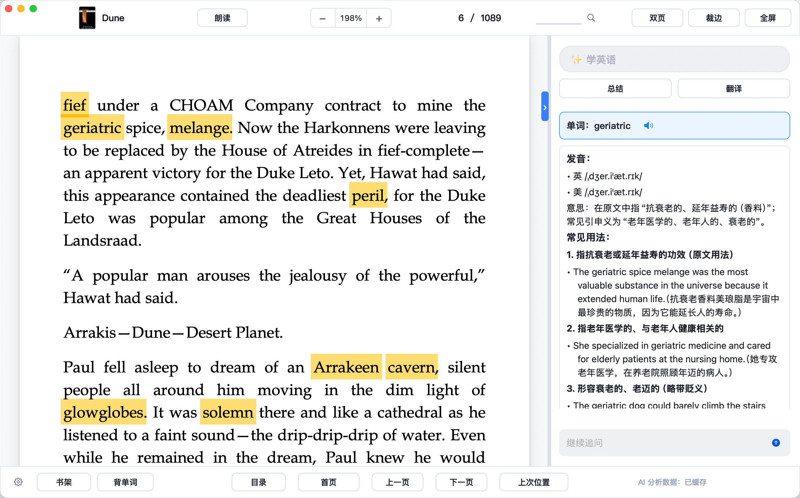
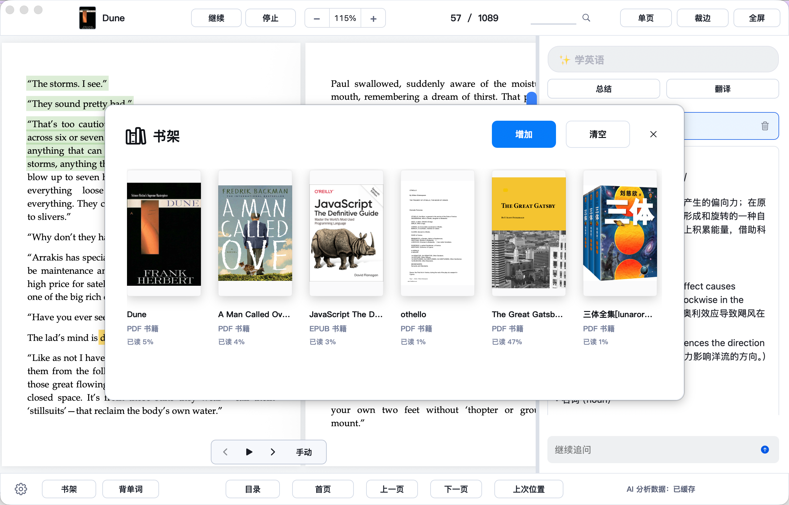
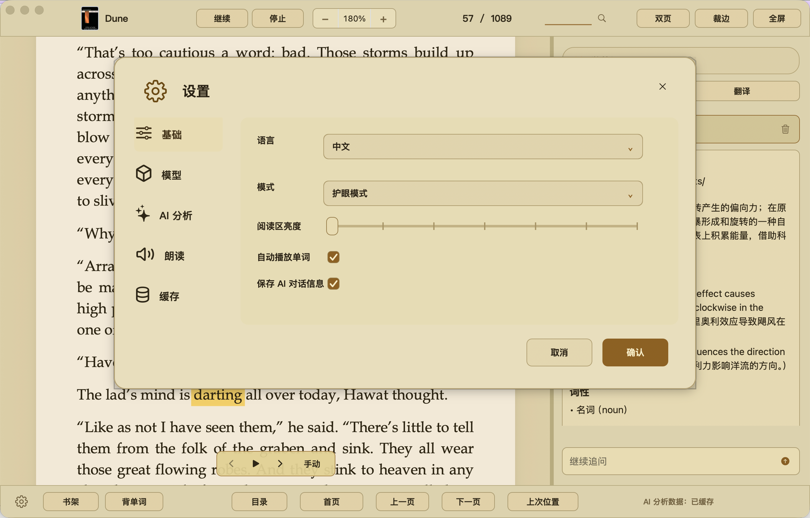
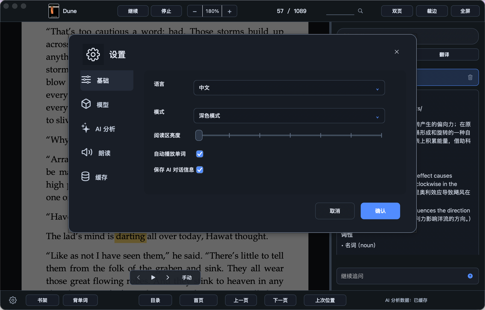
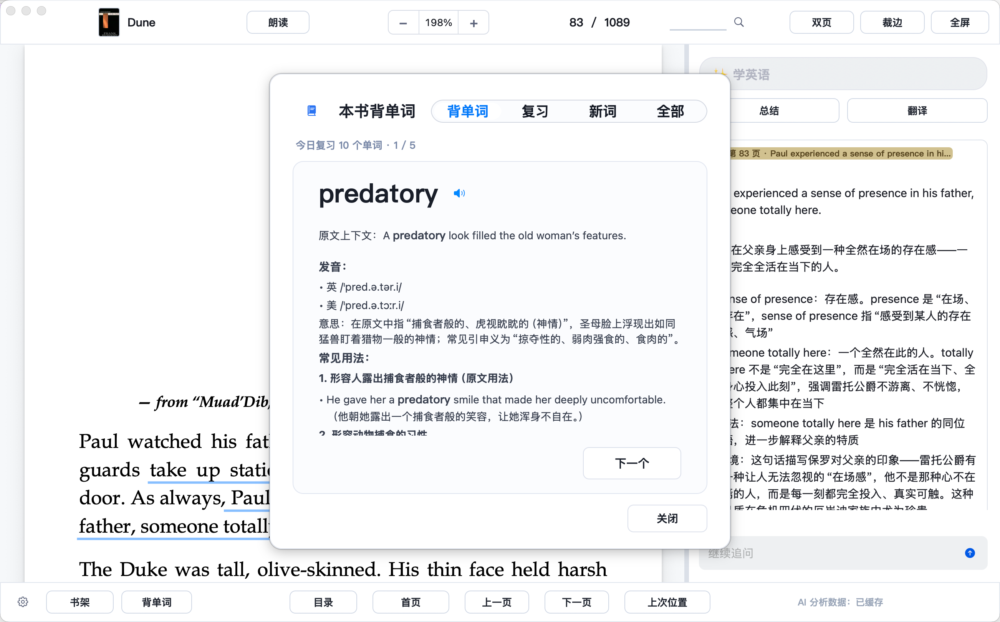

功能
多格式阅读
打开 PDF、EPUB、DOCX，恢复阅读进度、缩放和页码位置。
AI 阅读助手
选中文本后可以解释、总结、翻译，并继续追问上下文问题。
背单词
从阅读内容中保存单词，支持复习、新词、全部列表和导出。
书架
管理最近导入的书籍，快速回到最近阅读位置。
本地优先
文档保存在本机，只有使用 AI 功能时才发送请求到配置的模型服务。
自动更新
内置 Sparkle 更新通道，后续版本可在应用内检查更新。
截图




Leaf Reader 1.4.12
优化首次加载、AI 气泡恢复和窗口调整性能，新增加载提示，减少 AI 解释中的多余空行，并改善 PDF 滚动翻页定位。